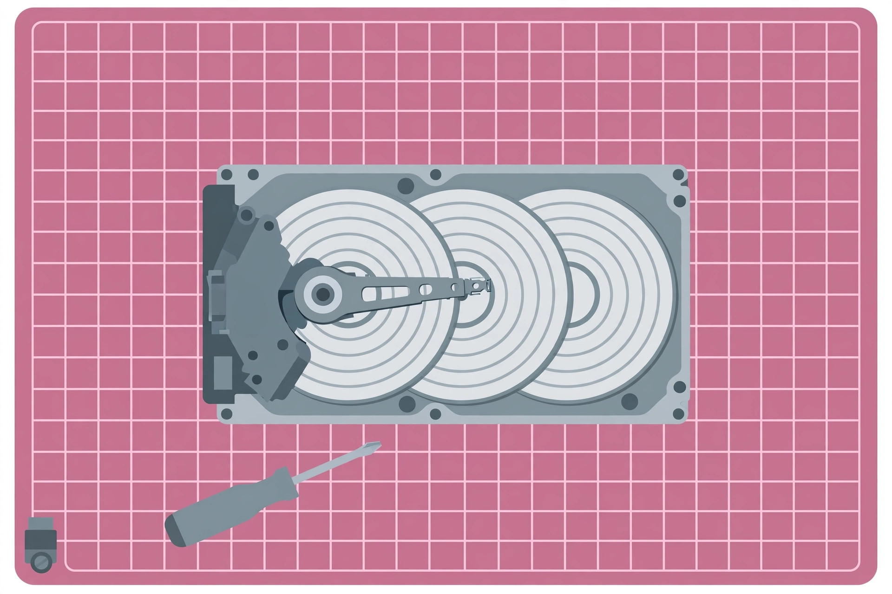

How to run CHKDSK on Windows 11 (and read the results)

CHKDSK — Check Disk — is Windows' built-in tool for finding and fixing file
system problems. Health-monitoring programs are great at watching your drive over
time, but when something is actually wrong — files won't open, the drive is slow,
Windows reports errors — CHKDSK is the tool that goes in and fixes it. The
confusion is the switches: /f, /r, /scan,
/spotfix. This guide matches the symptom to the right scan, walks
through both methods, and shows you where the report hides after a restart
erases it from the screen.
What CHKDSK fixes (and what it doesn't)
CHKDSK repairs logical file system errors: bad file records, broken
indexes, cross-linked files. It can also scan the disk surface for bad sectors
and recover readable data from them — but it cannot repair a physically dying
drive. If your drive is clicking, disappearing, or your SMART readings are
deteriorating, back up first and treat CHKDSK as triage, not a cure. On that
point: a full /r scan can take a long time on large hard drives, and
if you suspect the drive is failing, back up your data before running it
(Windows101Tricks).
Which scan for your symptom
| Your symptom | Run this | Why |
|---|---|---|
| Just a routine health check | chkdsk C: /scan | Online scan of an NTFS volume while Windows runs; makes no repairs, so it's safe for a cautious first look (Microsoft; HelpDeskGeek) |
| Windows or an app reports file system errors | chkdsk C: /f | Fixes errors on the disk; if the drive is in use you'll schedule it for the next restart (Microsoft) |
| Files won't open, bad sectors suspected | chkdsk C: /r | Locates bad sectors and recovers readable information; includes /f's functionality (Microsoft) |
| An online scan found problems, you want a targeted fix | chkdsk C: /spotfix | Applies targeted repairs identified during an online scan on modern NTFS volumes (HelpDeskGeek) |
| Windows won't boot at all | CHKDSK from the recovery environment | Automatic Repair → Troubleshoot → Command Prompt, then run with the correct letter (SolveYourTech) |
One repair method at a time — running every switch back-to-back wastes time
and makes the result harder to interpret (HelpDeskGeek). Note that
/scan, /spotfix and /forceofflinefix only
work on NTFS volumes (Microsoft).
Method 1: the no-typing GUI check
- Open File Explorer and select This PC.
- Right-click the drive and choose Properties.
- Open the Tools tab and click Check under Error checking.
- If Windows says "You don't need to scan this drive," you can still click Scan drive to check anyway (TheWindowsClub).
- If errors are found, you'll see "Restart your computer to repair the file system" — restart to let Windows fix them (TheWindowsClub).
Method 2: the command-line scan and repair
- Press Windows + X and select Terminal (Admin) (or Windows PowerShell (Admin) on Windows 10). Click Yes at the User Account Control prompt.
- For a safe first look, type
chkdsk C: /scanand press Enter. ReplaceC:with the affected drive's letter. This scans while Windows runs and changes nothing (HelpDeskGeek). - Read the final lines. If it reports corruption, back up essential files before continuing — repair changes the volume (HelpDeskGeek).
- To repair, type
chkdsk C: /fand press Enter. - If you see "Chkdsk cannot run because the volume is in use," press Y to schedule the check, then restart. Don't press a key when Windows offers to skip the disk check — let it run before the sign-in screen (HelpDeskGeek).
Finding the results after a restart
A restart-time check disappears when Windows loads. To read the report:
- Press Windows + R, type
eventvwr.msc, and press Enter. - Expand Windows Logs, right-click Application, and choose Filter Current Log.
- Under Event sources, check Chkdsk and Wininit, then click OK.
- Open the newest event to read the full report (SolveYourTech).
PowerShell alternative: Get-WinEvent -FilterHashtable
@{LogName="Application"} | Where-Object {$_.ProviderName -match "wininit"}
shows the latest restart-time results (SolveYourTech).
What success looks like
A clean scan ends with "Windows has scanned the file system and found no problems." After a repair, the report lists what was fixed — read it, and if the same errors return on the next scan, the problem is recurring, not resolved. Recurring errors, growing bad-sector counts, or a scan that never finishes are stop signs: back up immediately and plan a replacement drive (see our guide to signs your drive is failing).